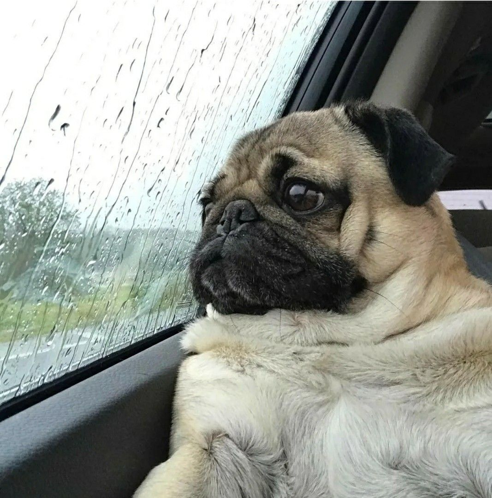
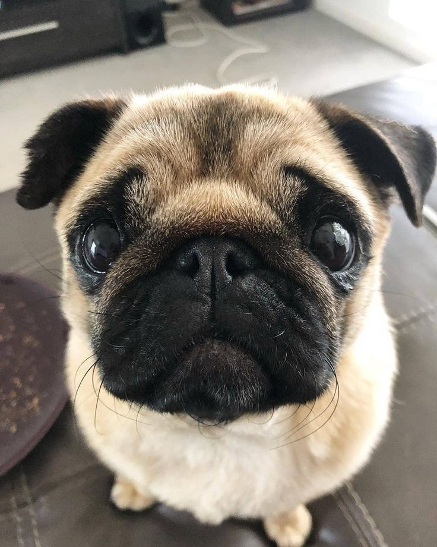
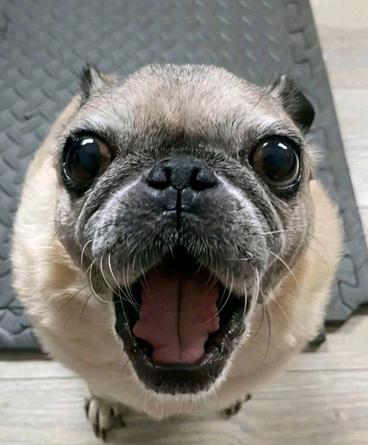
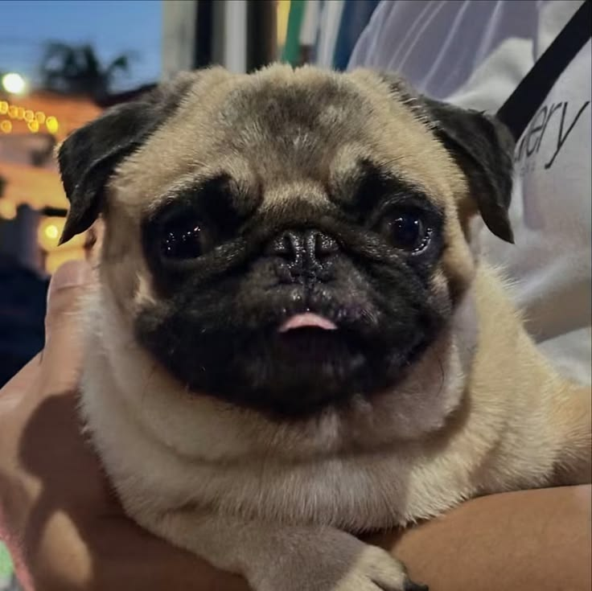
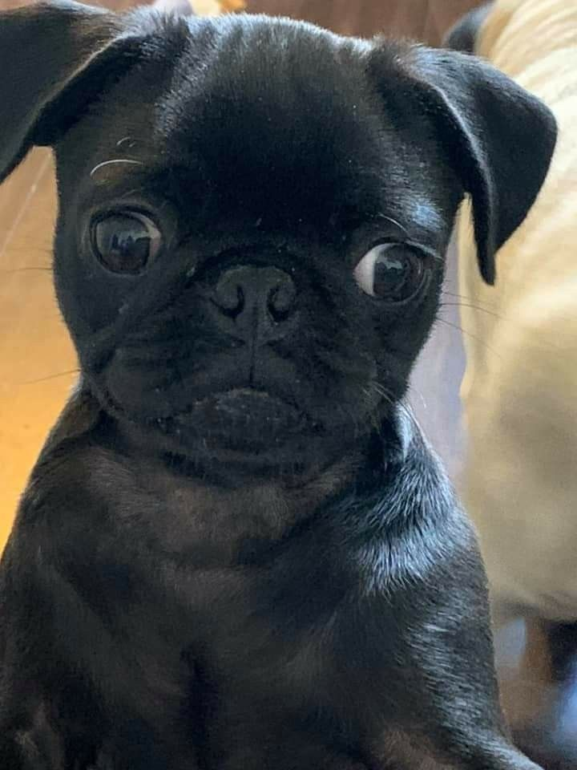
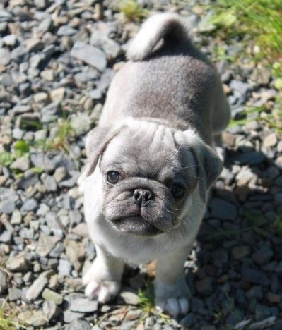
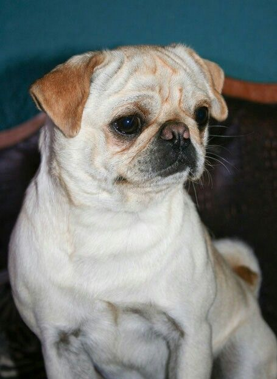

Характер
Дружелюбный и ненавязчивый. Мопс плохо переносит одиночество и предпочитает находиться рядом с человеком, а не охранять территорию.
Порода с характером
Спокойный компаньон для дома и семьи. Рассказываем, как ухаживать за складками, что важно знать о дыхании брахицефалов и почему мопсу нельзя перегреваться.

Мопсы выведены в Китае более двух тысяч лет назад как собаки-компаньоны — и с тех пор их главная работа не изменилась.
Дружелюбный и ненавязчивый. Мопс плохо переносит одиночество и предпочитает находиться рядом с человеком, а не охранять территорию.
Рост в холке 25–30 см, вес 6–8 кг. Компактный, но плотный и мускулистый — это не хрупкая декоративная собака.
В среднем 12–15 лет. При контроле веса и регулярных осмотрах у ветеринара мопсы часто доживают до верхней границы.
Терпеливы и не агрессивны, хорошо ладят с детьми. Но игры стоит контролировать: выпуклые глаза мопса легко травмировать.
Мопс неприхотлив в быту, но у породы есть несколько обязательных ежедневных ритуалов.
Протирайте влажной салфеткой без спирта 2–3 раза в неделю и обязательно насухо вытирайте. Влага в складке — прямой путь к воспалению.
Мопсы линяют круглый год. Вычёсывайте резиновой щёткой раз в неделю, в период сезонной линьки — через день. Купать достаточно раз в месяц.
Стригите когтерезом раз в 3–4 недели. Отросшие когти меняют постановку лап и со временем приводят к проблемам с суставами.
Осматривайте еженедельно. Висячая форма уха плохо проветривается, поэтому сера и влага скапливаются быстрее, чем у стоячих ушей.
Чистите специальной пастой 2–3 раза в неделю. Из-за укороченной челюсти зубы стоят тесно, и налёт образуется заметно быстрее.
Два раза в день по 20–30 минут в спокойном темпе. В жару выходите рано утром и поздно вечером — мопс не умеет эффективно охлаждаться дыханием.
Мопс — брахицефал: у него укороченный череп и суженные дыхательные пути. Это определяет почти все риски породы, и знать их нужно до покупки щенка.
Материал носит справочный характер и не заменяет консультацию ветеринарного врача.
Мопсы бывают палевыми, абрикосовыми, серебристыми и чёрными — но выражение морды у всех одинаково внимательное.






В среднем 12–15 лет. Основные факторы, которые сокращают этот срок, — лишний вес и запущенные проблемы с дыханием, а не возраст сам по себе.
Да, и круглый год — это одна из главных бытовых особенностей породы. Короткая шерсть заметна на тёмной одежде и мебели. Регулярное вычёсывание снижает количество шерсти в доме, но не убирает её полностью.
Да, это одна из самых «квартирных» пород: мопсу не нужны длительные нагрузки, он мало лает и спокойно проводит день дома. Учитывайте только храп во сне — для чуткого сна хозяина это может быть проблемой.
Плохо. Строение носоглотки мешает охлаждаться дыханием, поэтому тепловой удар наступает быстрее, чем у других пород. Летом гуляйте по прохладе, берите воду и следите за отдышкой — при ней прогулку нужно прекратить.
Мопс сообразителен, но упрям и быстро теряет интерес к повторам. Занятия должны быть короткими и на положительном подкреплении: жёсткие методы порода переносит плохо и просто перестаёт сотрудничать.